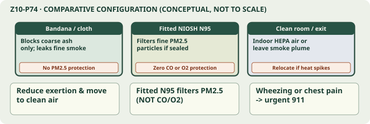

Z10-P74 · Wilderness medicine · New manuscript
Mitigate wildfire smoke and irritant-gas airway exposure outdoors
Protect lungs from fine PM2.5 smoke particulates and recognize severe airway distress requiring rapid relocation and clinical care.
When it applies · Wildland fire smoke plumes, heavy camp smoke inversions, or regional Unhealthy AQI events affecting travelers or households.
Equipment · Live AirNow AQI alerts when reachable, properly fitted NIOSH N95/P100 particulate respirator (if essential), and indoor HEPA clean-room access.

Actions
- Move away from dense wildfire smoke plumes promptly, reduce heavy aerobic exertion (which pulls deep PM2.5 particles into lungs), and relocate into an enclosed clean-air indoor room or outside the smoke corridor whenever possible.[D06, D07, C19]
- A well-fitting particulate respirator can reduce smoke particles. It cannot protect against carbon monoxide, toxic gases or oxygen deficiency. Follow local health alerts and evacuate when directed.[D06, D08]
- Monitor individuals with asthma, heart disease, pregnancy, children, and older adults closely; assist only with their own prescribed inhalers and call 911 for wheezing, chest pain, persistent coughing, or shortness of breath.[D06, M08, T02]
Failure recognition · Running hard trails in Very Unhealthy wildfire smoke wearing a damp bandana under the false belief it blocks fine smoke and gases.[D06, C19]
Verify · Confirm exertion dropped, clean indoor air or route relocation is prioritized, and vulnerable travelers have own inhalers ready.[D06, D07]
Stop or change course · Active advancing flames, thick eye/throat-burning smoke, chest pain, or worsening wheezing requires immediate evacuation and clinical evaluation.[C19, D06, T02]
Evidence and editorial notes
- C19 · FEMA / Ready.gov · Wildfires (current web edition)
- Section: Wildfires > Stay Safe and Smoke Protection · Conditions: Approaching wildfire or heavy smoke in camp or community
Support: Evacuate early along open routes per official orders, protect airways from heavy smoke, and avoid turning back into active fire corridors.
Limitations: Cloth face coverings do not filter fine wildfire smoke particles; fitted particulate respirators or clean indoor air are distinct interventions. · Conflicting evidence: None; coordinates with NWS-WILDFIRE.
Editorial note: Covers wildfire escape and smoke decision thresholds in Z01/Z03. · Specialist reviewer: Emergency management and fire safety
Primary source · checked 2026-11-24 - D06 · US EPA / AirNow · Wildfires and Air Quality (current web edition)
- Section: Wildfires and Air Quality > AQI Categories and Exposure Reduction · Conditions: Regional or local wildfire smoke plumes impacting air quality
Support: Monitor live official AirNow AQI readings and local health advisories; move indoors with windows/doors closed during Unhealthy AQI levels, limit heavy exertion, and use properly fitted NIOSH-approved N95/P100 particulate respirators if essential outdoor exposure cannot be avoided.
Limitations: Surgical masks, bandanas, and dust masks do not seal against fine PM2.5 wildfire smoke particles; N95s do not protect against carbon monoxide or low oxygen. · Conflicting evidence: None; complements C19 and READY-WILDFIRE.
Editorial note: Grounds AQI smoke thresholds and respiratory protection limits in Z15. · Specialist reviewer: Environmental health and air-quality specialist
Primary source · checked 2026-11-24 - D07 · US EPA · Create a Clean Room to Protect Indoor Air Quality During a Wildfire (current web edition)
- Section: Create a Clean Room > Indoor Filtration and Recirculation Setup · Conditions: Households sheltering indoors during multi-day wildfire smoke events
Support: Designate an interior room with few doors/windows, run a properly sized portable HEPA air cleaner (avoiding ozone generators) or set HVAC to recirculate with a MERV-13 filter if system-compatible, and avoid indoor combustion (candles, gas stoves, vacuuming without HEPA) that adds particulates.
Limitations: During simultaneous extreme heat and smoke, cooling takes priority if indoor temperatures become dangerous—relocate to a public clean-air cooling center. · Conflicting evidence: None; addresses compound smoke-plus-heat emergencies.
Editorial note: Core indoor clean-room assembly and compound-hazard card evidence. · Specialist reviewer: Indoor air quality and public health
Primary source · checked 2026-11-24 - D08 · FEMA / Ready.gov · Wildfires (current web edition)
- Section: Stay safe during wildfire; evacuate when directed · Conditions: Wildfire threat with local warning and evacuation system
Support: Plan to leave early and follow official open routes and local evacuation orders. Return only when allowed.
Limitations: Ready–Set–Go is one local vocabulary. Vehicle staging is editorial and does not justify delay after a warning. · Conflicting evidence: See A02 claim audit for boundaries.
Editorial note: Grounds wildfire evacuation readiness and route-abort decisions. · Specialist reviewer: Wildland fire management and emergency services
Primary source · checked 2026-11-24 - M08 · AHA and American Red Cross · 2024 Guidelines for First Aid (2024)
- Section: Anaphylaxis · Conditions: Suspected severe allergic reaction; community first aid; prescribed epinephrine or applicable local protocol
Support: Activate EMS promptly and assist with epinephrine under the relevant device or action plan. Follow professional direction for subsequent care.
Limitations: Pediatric device selection, subsequent dose, timing and transfer require product, patient and local protocol. · Conflicting evidence: See A02 claim audit for boundaries.
Editorial note: Separates assisting with a patient's prescribed auto-injector from lay prescribing. · Specialist reviewer: Allergy/immunology and EMS
Primary source · checked 2026-11-25 - T02 · American Red Cross · First Aid Steps (current web edition)
- Section: First Aid Steps > Call 9-1-1 · Conditions: Lay emergency response to unresponsiveness, abnormal breathing or severe bleeding
Support: Activate EMS and get needed equipment. Follow dispatcher directions and act within training.
Limitations: Remote locations may delay EMS arrival, requiring sustained stabilization after activation. · Conflicting evidence: None; aligns with NPS-E.
Editorial note: Mandates early emergency activation and dispatcher adherence. · Specialist reviewer: EMS and wilderness medicine
Primary source · checked 2026-11-24
Source lineage · US EPA AirNow Wildfires and Ready.gov Wildfires; new manuscript · Classification · New manuscript.